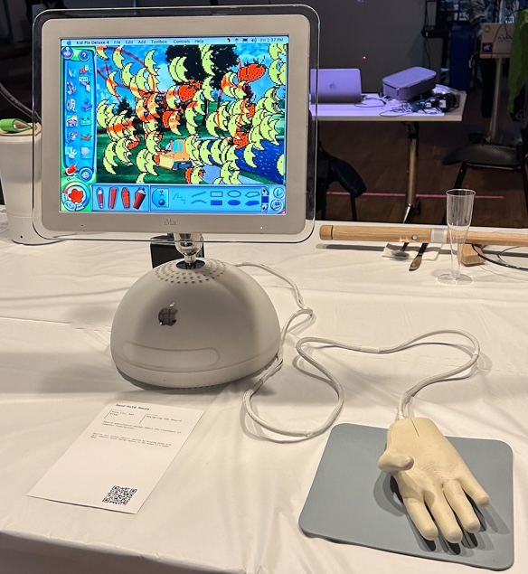

projects |
|---|
| ✴︎ resume |
| 100 days of websites |
| ⇱ roots, the html review 03 |
| ⇱ diaspora radicals, Taper #11 |
| ⇱ badwatercolor |
| ⇱ creative coding |
workshop |
| ⇱ hacking with the browser |
hello, welcome to my website.
the last time this website was completely changed was in 2018.
websites are always a work in progress; i hope this new website is a better reflection of how i feel about websites now--they can be plain javascript + html, and they can be fun (!) because it leaves room for more important things--like accessibility, maintenance, and room to grow.
my old website had ~406 MB of assets; this one has ~50 MB
- anna
soft networks
The soft networks is a net made of nodes that communicate to each other by touches--when one person hugs a node, a message is sent to all the other nodes which can be felt by another person.
Why
soft networks is crafted with a mixture of mediums and methods questioning the origins of the technology we use and playing with the many meanings that the net carries.
How
soft networks is a net made of yarn carrying nodes that will send messages to each other via sockets on a local network when touched.
Each node consists of recycled burlap and fleece yarn, a small board with a Raspberry Pi Zero, which starts a server and listens for messages, and also controls 2 mini haptic motors.
Conclusion
Embodied in the speculative nature of soft networks is the question to phone users everywhere: what are the different ways you could be communicating to me?
This project culminated in a 1-day show co-created with jo, sim, neeti, and angie.
Special thanks to many, many people who shared their time with me during the process of making this project.
Read more about it here.handhold mouse
The handhold mouse--connected to a iMac G4 computer, inviting people to play with an old drawing program called Kid Pix (2000) on the iMac.
Why
Computing can be a lonely experience, and sometimes when you go through a difficult virtual experience it would be nice to still have a hand holding you through it in the physical realm.
How
This was a project created in collaboration with Kat Kitay.
The model was a modified version of a hand model that was 3D-printed, and lovingly spray-painted. The hardware was taken from an HP optical mouse, and fit into the back of the handhold mouse.
Conclusion
A conversation that I had with a lot of people who came to play with this project was about how playful personal computing was in the past. Thank you to these people for reminiscing with me, and for sharing these insights in conversation with me.
What are alternatives for personal computers today? What are the ways our computer acknowledges the corporeal?
Special thanks to: pedro, josh, jo, sim, shuang, hank, cindy, and kai.
Read more about it here.eeg cloud

Twins using the EEG devices, and controlling different sets of the lights in the EEG cloud, based on activity levels in their brain.
Why
Communication often fails us--mispronunciation, misinterpretation, other mishaps; we wanted to explore a different way of communicating our thoughts, and feelings about a situation, using our brainwaves.
How
This project was created in collaboration with Daniel Wai, and with a lot of advice on EEG devices, as well as how to read its data from Jason Snell.
The EEG cloud consists of two sets of LED lights suspended in the air. Each pair of lights is connected to one of the two Muse 2 (EEG sensing device) devices. Participants are invited in pairs to put on one of the Muse 2 devices, which will record their brain activity. The EEG data is sent to the Arduino paired with the LED lights via WiFi, and the LED lights reflect a different color based on the state of the participants' mind.
Conclusion
This was an interesting exploration of what alternate forms of communication, and expression could look like. When this project was presented as part of the ITP 2023 Spring Show (for the class Intangible Interactions by Yeseul Song), we received a lot of interesting ideas from people.
For example, what if we could have EEG-controlled lighting in our homes--a pre-anticipation of mood lighting? Or what if we use this as a trauma recovery therapeutic device, to guide us in our mental state on how we feel about a certain subject before we can verbalize it by allowing us to express it in a gentler, passive way?
Read more about it here.ai loves horror

A horror text-based adventure game made using OpenAI's GPT-3 (Davinci model) API. This project was shown during the ITP Winter Show, 2022.
Why
It's an homage to old-school text based adventure games, and an exploration of AI's ability to write an emotionally compelling story for the player.
How
The app sends a prompt to Davinci to write a text-based adventure game that will give players choices numbered 1-3. When a choice is made, it is added back to the entire story, and sent as a prompt to Davinci to send more choices, until the story is finished.
The story changes every time it is run, and it is generated live during gameplay. Ony Davinci has control over the choices, and when to end the game.
The pace of the text also increases the longer the player plays.
Conclusion
It's interesting how Davinci is able to create a cohesive story that follows the theme of a horror adventure game. The stories Davinci generates usually consists of one spooky figure in a strange place, and the player is given choices to confront the figure or run away.
Somehow, the story always ends in about 5 minutes or so, and Davinci almost always gives a somewhat optimistic ending.
Read more about it here.text me smth nice

A messaging app that uses the Twilio SMS API to send out nice texts periodically.
Why
During the pandemic, i wanted to remind my friends, and myself that there are brighter times ahead.
How
I created a Python app that runs on a scheduler to use the Twilio SMS API, sending a text to subscribed numbers during random times of throughout the day.
Conclusion
Texting seems to be a pretty non-intrusive way of reaching out to people that can be made into a positive experience.
It made me happy to hear from a friend that the random texts throughout the day did help them through a tough time.
Read more about it here.tableware zine


{kind=link}
{kind=link}
badwatercolor

filmotography
Yosemite


Alaska


East Coast


about |
|---|
|
anna y lin (⾋ she/her) is a cantonese-american creative technologist. her projects are rooted in a creative process driven by research, and playful media explorations to subvert, refocus, and speculate dominating paradigms. her roots are from guangzhou, transplanted to belize city, and the bay area; currently based in lenapehoking (brooklyn). |
|
most recently working on an accessible web archive project, and currently open to web development opportunities on public interest and social justice projects. |
|
previously, contributed to code systems at MITRE, and Schwab as a fullstack UX engineer in the realms of cybersecurity, policy, finance, and briefly with the wonderful people at Stamen Design |
| say hi |
|
one can find a photo of anna here |
| github, instagram, are.na |